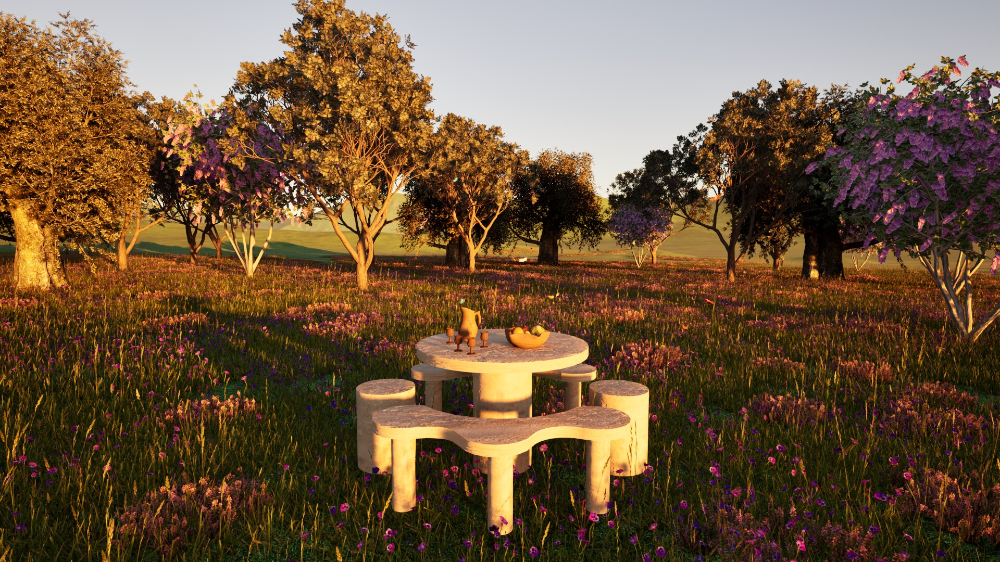

Camila FLORES JUSTINIANO
PORTFOLIO
Latest projects
Hi, my name is Camila, I am a young Designer based in Geneva, Switzerland with a diploma in 3D Design. I am passionate about interior decoration and furniture design, and I am dedicated to creating innovative and functional spaces through my work.
Here is a selection of my projects I did in the last few years.
01

WAVE-SHAPED TABLE
Winner of the urban kit competition organized by the St-Gervais association in Geneva. The Wave-Shaped Table was a project during my final school year, aimed at creating seating for Geneva’s parks.
Modeling : Rhinoceros
Rendering :Twinmotion
02

NIGHT TABLE
The night table was a personal project.
Modeling : Rhinoceros
Rendering : Keyshot
VILLA PULLY
03

The Villa Pully was a project completed during my Archicad training at Asimco. The modeling was done in Archicad, and the rendering was done in twinmotion.
Modeling: Archicad
Rendering: Twinmotion
04

3 SEATS
Winner of the Oak Wood Urban Furniture competition organized by the Forêt Genève association. A range of furniture with multiple functions, ideal for public parks in the canton of Geneva.
Modeling : Rhinoceros
Rendering : Twinmotion
BIENALE PIPAS
05

Individual practical work in white an exhibition setup for multiple photographic narratives from the first edtion of the Bienale Pipas.
Modeling : Rhinoceros
Rendering : Keyshot, Photoshop
06
ROUND TABLE
Personal project, a garden table.
Modeling : Rhinoceros
Rendering : Twinmotion
07
CORYLUX


The Corylux building was a project completed during my Archicad level 2 training at Asimco.
Modeling : Archicad
Rendering : Twinmotion
SAINT-GINGOLF
MUSEUM
08

Individual practical work the goal was to create exhibiton setups for the St-Gingolf Museum.
Modeling : Rhinoceros
Rendering : Keyshot, Photoshop


SUNGLASSES
Personal project, creation of sunglasses.
Modeling : Rhinoceros
Rendering : Twinmotion
09
10

Personal project, creation of a wooden coffee table.
Modeling : Rhinoceros
Rendering : Twinmotion